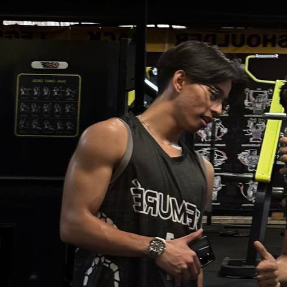

Hi, I’m Dabe, an intentional student carving a steady path into backend and data work. Early curiosity about how things are built turned into a drive to craft clear, accessible interfaces and solid data flows. Each small project strengthens my grasp of structure, problem solving, and simplicity. I thrive on feedback, collaboration, and turning rough ideas into clean reusable patterns. At 19 years old (167cm, 65kg), focused on Data Management, I recharge through volleyball, lifting, and good sleep.